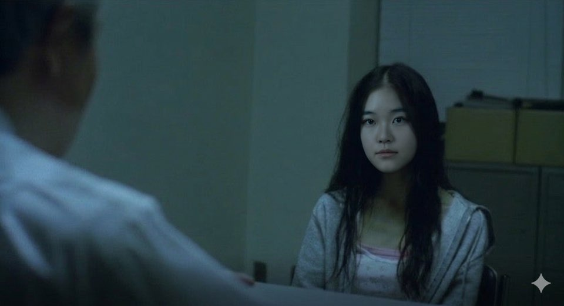
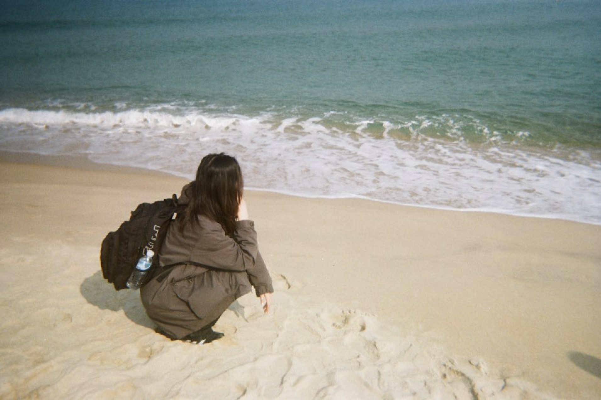
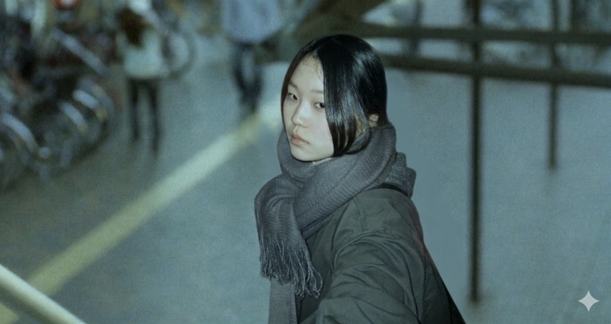

도망이 아니야! 또다른 배움의 길



타나다 유키 · 2006.03.14 · 21년
잘하고 좋아하는 그림그리기로 전공을 살려 고등학교에 입학했다. 서양화, 한국화, 조소, 디자인 세부 전공 선택에서 좋아하는 것보다 잘하는 서양화를 선택했지만 계속되는 불합격에 3수만큼은 피하고싶어 배우고싶었던 디자인으로 전공을 바꾸어 대학을 지원하고 합격해 입학하게된다.
여선우